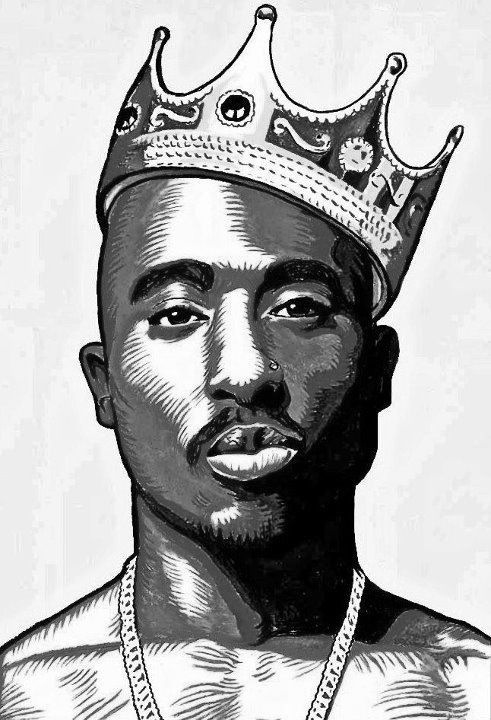

Age: 44
Top Songs: Changes, Hail Mary, California Love, Dear Mama
Net Worth: $40 million
 It was a real toss up between Dicky and 'Pac for the six spot, but I ultimately decided that Pac just has that little something special that Dicky doesn't have at this point in his career. Some may question if Tupac should be allowed on this list, as many believe he is dead and this list is for current rappers and not MC's from the 90's. However, there is proof that he is still alive and he is just hiding and still producing music. He isn't the same Tupac as he used to be though, as his lyrics are not as deep as they used to be, even though they weren't awfully deep and meaningful to start with. If he actually starts putting feeling into his songs, you could see his spot rise drastically.